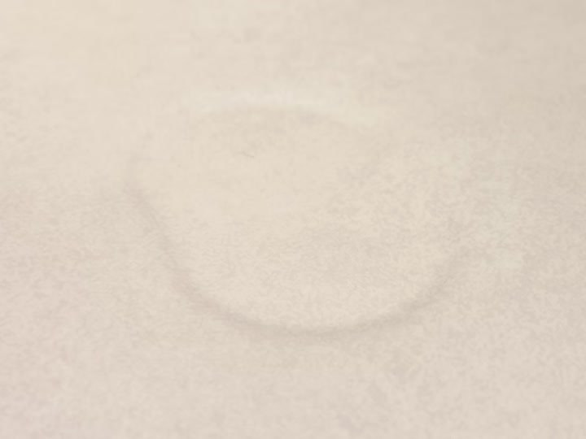
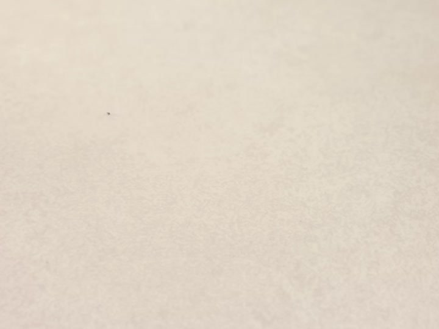

매트 눌림 자국 안내
안녕하세요, 돌봄매트입니다!
쿠션감이 있는 제품이다 보니 가구 및 의자에 의한 눌림은 있을 수 있습니다!
눌린 자국은 아래 영상처럼 다리미로 복원이 가능할 수 있으니, 편안하게 사용하시고 추후 복원해 보시길 추천드립니다.
같은 자리, 다림질 전과 후


위 영상의 시작과 끝 장면이며, 같은 위치에서 촬영했습니다.
복원 방법
- 눌린 자리에 있는 가구나 의자를 옮겨 주세요.
- 다리미를 매트 위에 올리고, 영상처럼 눌린 부분 위를 계속 오가며 다려 주세요.
- 1분 정도면 문제 없습니다.
궁금하신 점은 언제든
카카오톡 채널로 편하게 문의해 주세요.